Abstract
Robotic grasping in cluttered environments requires reasoning over complex 3D geometry from partial observations. Contact-GraspNet (CGN) predicts grasps directly from point clouds, but relies on PointNet++, which limits global context. We propose Contact-GraspTransformer (CGT), which keeps CGN's contact heads and loss and replaces the backbone with Point Transformer v3 (PTv3).
On a 15-category ACRONYM subset, CGT reduces test loss from 0.82 to 0.75 and cuts inference time from 113.64 ms to 66.97 ms, at the cost of a larger model (0.8M → 8.8M parameters). Transformer serialization plus windowed attention improves both accuracy and speed; the remaining trade-off is parameter count, and gripper-width classification is the one term where PointNet++ still wins.
Method
Both models take a 4,096-point cloud and predict a grasp at every point: confidence, approach and baseline directions, and gripper width. The only architectural change is the backbone. PTv3 voxelizes the cloud, serializes voxels with space-filling curves, and runs windowed attention instead of PointNet++ radius-ball grouping.
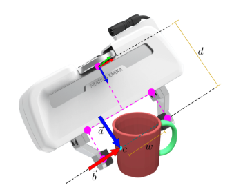
Contact-centric grasp Translation is anchored at a surface contact c. Rotation is built from the approach a and baseline b after an in-network Gram–Schmidt step.
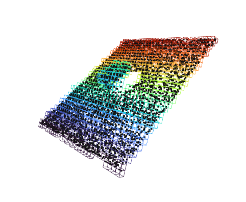
Voxelization Points are quantized onto a grid. Multiple points can share a voxel; they remain distinct tokens for the transformer stages.
Serialization uses four curves — Morton (Z), transposed Morton, 3-D Hilbert, and transposed Hilbert — with a shuffle-order augmentation so the network does not overfit one 1-D layout.
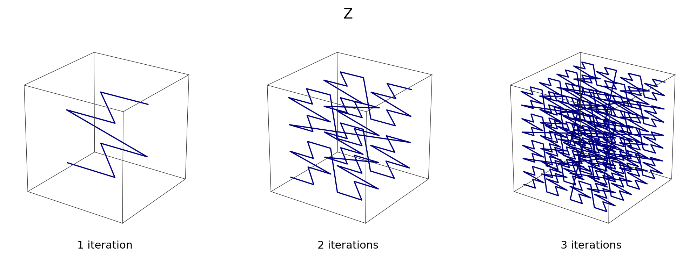
Morton (Z-order)
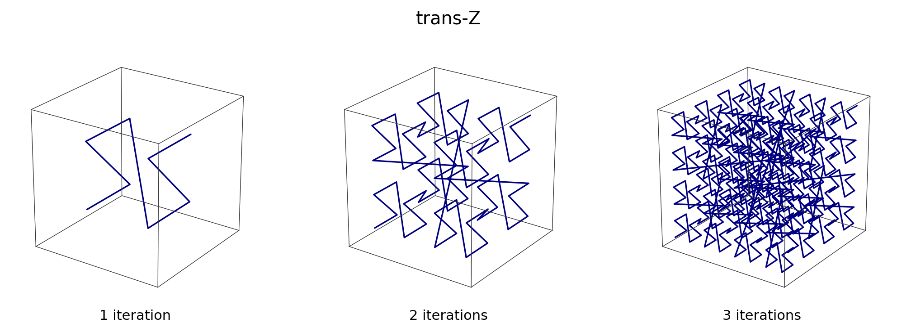
Transposed Morton
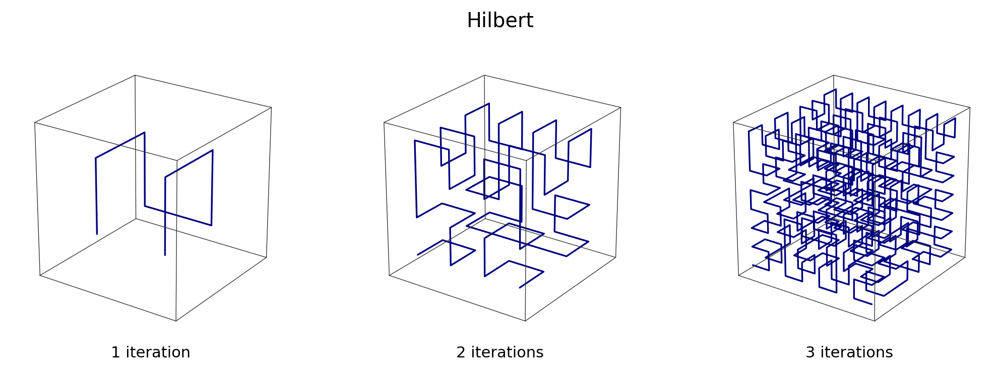
3-D Hilbert
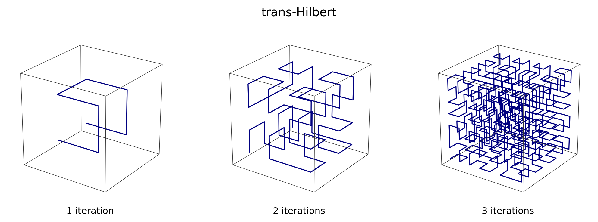
Transposed Hilbert
Encoder stages pool along the serialized order; decoder stages unpool with skip connections. The figure below shows successive encoder voxel grids from our visualization tools.
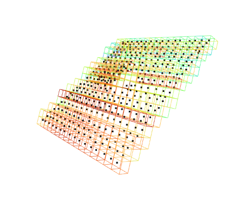
Encoder stage 0
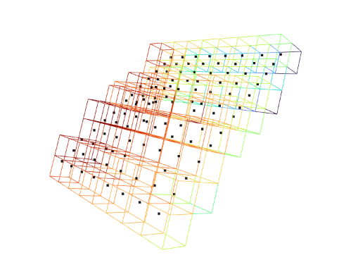
Encoder stage 1
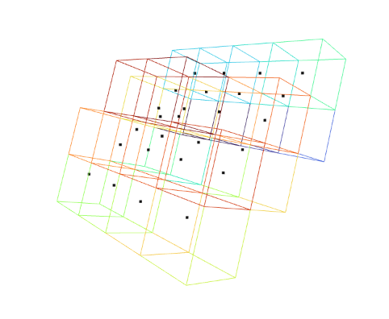
Encoder stage 2
Results
Matched training: same CGN heads, same loss, same 4,096-point clouds, held-out meshes never seen at train time. PTv3 uses the sparse3d xCPE variant.
| Metric | PointNet++ | PTv3 (sparse3d) | Δ |
|---|---|---|---|
| test/loss | 0.82 | 0.75 | −0.07 |
| test/loss_conf | 0.66 | 0.62 | −0.04 |
| test/loss_adds | 0.046 | 0.036 | −0.010 |
| test/loss_width | 0.42 | 0.78 | +0.36 |
| Inference time (ms) | 113.64 | 66.97 | −46.67 |
| Parameters (M) | 0.8 | 8.8 | +8.0 |
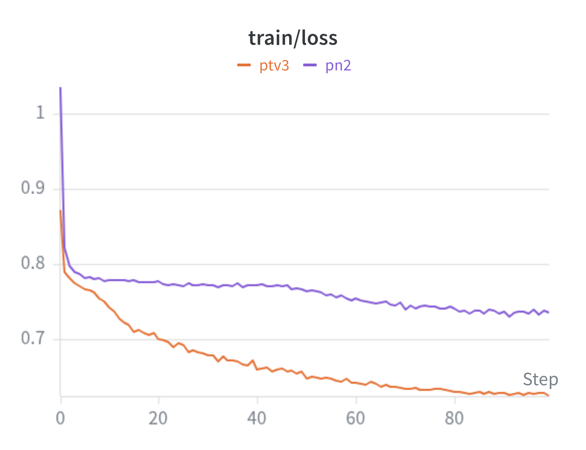
Train loss PTv3 (orange) vs PointNet++ (purple).
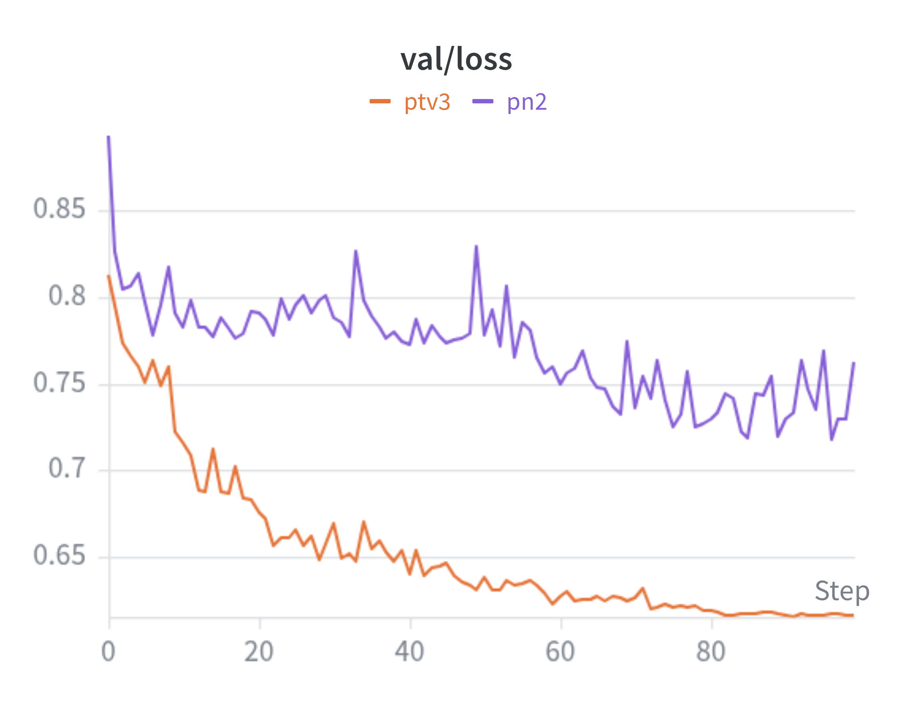
Validation loss PTv3 converges lower and more stably.
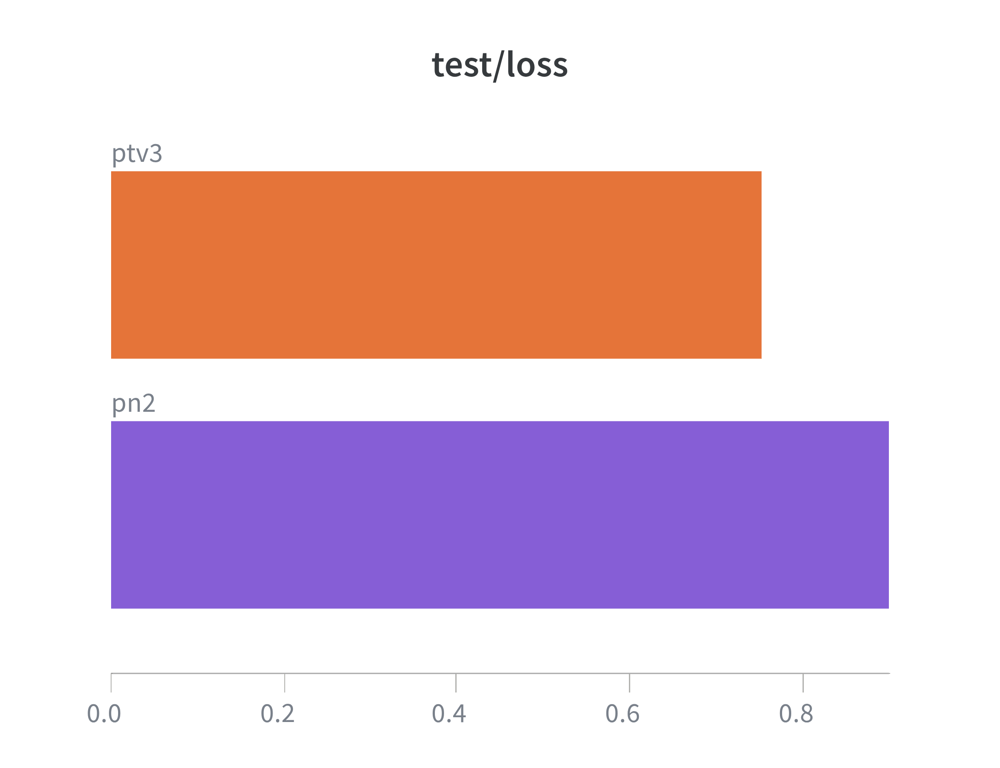
Test loss Held-out objects, matched conditions.
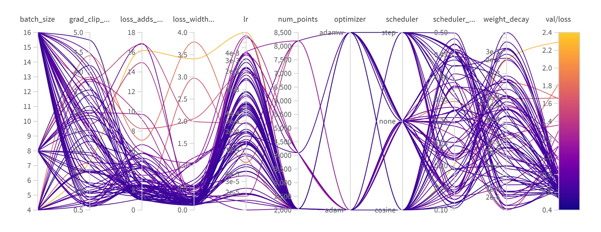
80-trial Bayesian sweep on PTv3. Best region: learning rate 2e-4–1e-3, AdamW, cosine or step schedule, and CGN loss weights rebalanced so ADD-S is 1–3 and width is < 0.2 (the paper defaults of 10 and 1 over-weight those terms).
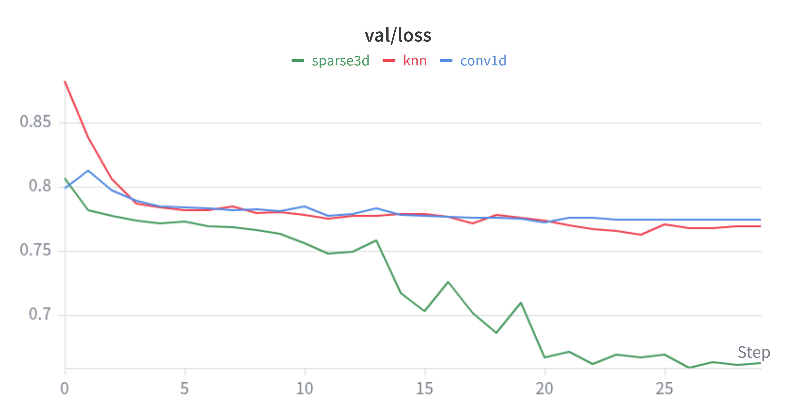
xCPE ablation. sparse3d (0.75) is the selected variant: faster than k-NN and more accurate than conv1d. knn 0.78, conv1d 0.80.
Top-1 confidence on one held-out scene per category. PTv3 is ahead on every object; the gap is largest on cups and pencils, where local grouping has little geometry to work with.
| Object | PointNet++ | PTv3 |
|---|---|---|
| Cup | 0.51 | 0.79 |
| Bottle | 0.50 | 0.51 |
| Bowl | 0.50 | 0.51 |
| Mug | 0.50 | 0.52 |
| Pencil | 0.06 | 0.27 |
MuJoCo simulation
Loss does not prove a grasp can be executed. We replay top-1 predictions on a Franka Panda in MuJoCo: approach along the predicted vector, close, then lift 15 cm. Success is an object lift of at least 3 cm. These clips are the same recordings hosted on the Google Sites page.
Bottle — PointNet++ vs PTv3
PointNet++ Top-1 grasp execution on the test bottle.
PTv3 Top-1 grasp execution on the same object.
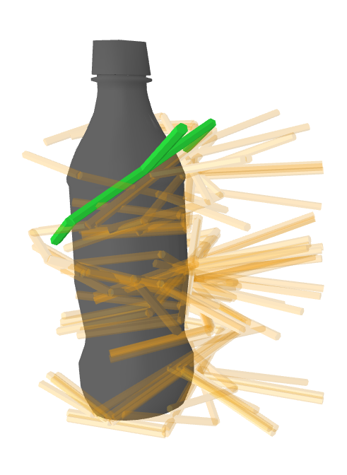
Ground truth
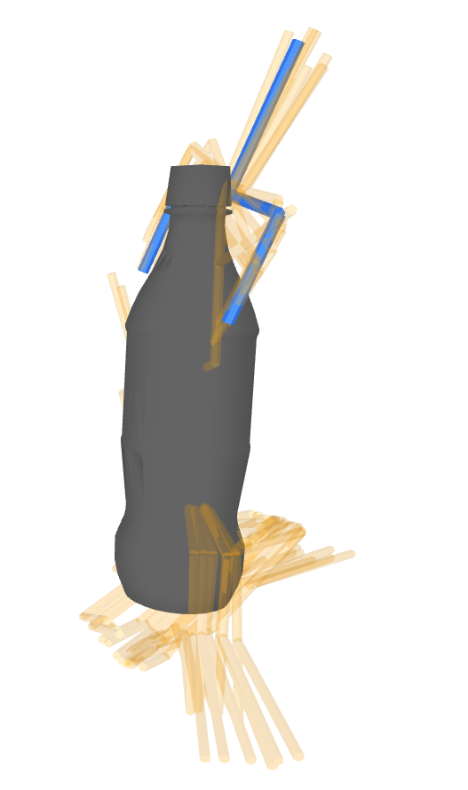
PointNet++ candidates
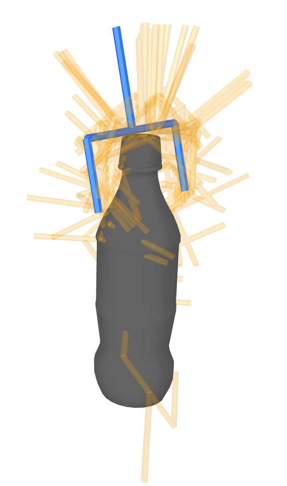
PTv3 candidates
Mug — PointNet++ vs PTv3
PointNet++ Rim grasp; the mug lifts.
PTv3 Handle grasp; the mug lifts.
Codebase
The public repo is
Contact-GraspTransformer.
It covers ACRONYM subsetting, synthetic RGB-D generation, training both backbones,
inference to ACRONYM-style .h5 files, Open3D visualization, and the MuJoCo
evaluator used for the videos above.
conda create -n idlsproj python=3.9 -y
conda activate idlsproj
pip install torch torchvision --index-url https://download.pytorch.org/whl/cu128
pip install -r requirements.txt -r requirements-data.txt -r requirements-viz.txt -r requirements-eval.txt
python data/acronym/build_acronym_subset.py --src /path/to/acronym
python data/generate_data.py --category Mug --n_views 5
python train.py --data_dir data/out --backbone ptv3 --epochs 10
python inference_cli.py --ckpt checkpoints/ptv3/<run>/best.pt --points data/out/test/Mug/<hash>/000.npz
python -m eval.visualize_grasp --source pred_ptv3 --checkpoint checkpoints/ptv3/<run>/best.pt \
--view_npz data/out/test/Mug/<hash>/000.npz --top_k 5 --compare_labels_previewFull install notes, coordinate frames, and MuJoCo flags are in SETUP.md.
BibTeX
@techreport{Royal2026CGT,
title = {Contact-GraspTransformer},
author = {Royal J., Devansh and Mirebrahimi, Aida and Wang, Tim and Shankar K., Dinesh Varun},
year = {2026},
institution = {Carnegie Mellon University},
note = {11-785 Introduction to Deep Learning, Spring 2026},
url = {https://devanshroyal-7.github.io/Contact-Grasp-Transformer/}
}